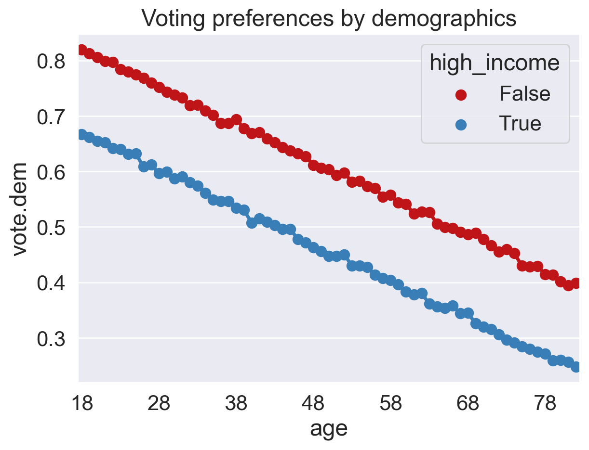
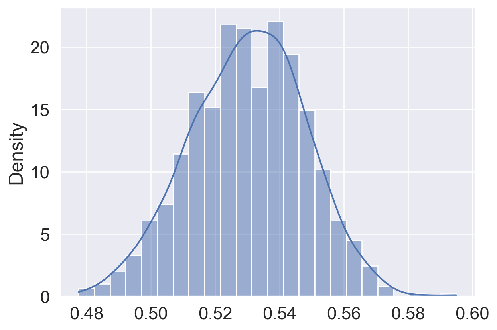

import numpy as np
np.random.multinomial(100, [0.60, 0.30, 0.10])array([63, 27, 10])In Data Science, understanding characteristics of a population starts with having quality data to investigate. While it is often impossible to collect all the data describing a population, we can overcome this by properly sampling from the population. In this note, we will discuss appropriate techniques for sampling from populations.

In general: a census is “an official count or survey of a population, typically recording various details of individuals.”
A survey is a set of questions. An example is workers sampling individuals and households. What is asked, and how it is asked, can affect how the respondent answers, or even whether the respondent answers in the first place.
While censuses are great, it is often difficult and expensive to survey everyone in a population. Thus, we usually survey a subset of the population instead.
A sample is often used to make inferences about the population. That being said, how the sample is drawn will affect the reliability of such inferences. Two common source of error in sampling are chance error, where random samples can vary from what is expected, in any direction; and bias, which is a a systematic error in one direction.
Because of how surveys and samples are drawn, it turns out that samples are usually—but not always—a subset of the population: * Population: The group that you want to learn something about. * Sampling Frame: The list from which the sample is drawn. For example, if sampling people, then the sampling frame is the set of all people that could possibly end up in your sample. * Sample: Who you actually end up sampling. The sample is therefore a subset of your sampling frame.
While ideally these three sets would be exactly the same, in practice they usually aren’t. For example, there may be individuals in your sampling frame (and hence, your sample) that are not in your population. And generally, sample sizes are much smaller than population sizes.

The following case study is adapted from Statistics by Freedman, Pisani, and Purves, W.W. Norton NY, 1978.
In 1936, President Franklin D. Roosevelt (D) went up for re-election against Alf Landon (R) . As is usual, polls were conducted in the months leading up to the election to try and predict the outcome. The Literary Digest was a magazine that had successfully predicted the outcome of 5 general elections coming into 1936. In their polling for the 1936 election, they sent out their survey to 10 million individuals, who they found from phone books, lists of magazine subscribers, and lists of country club members. Of the roughly 2.4 million people who filled out the survey, only 43% reported they would vote for Roosevelt; thus the Digest predicted that Landon would win.
On election day, Roosevelt won in a landslide, winning 61% of the popular vote of about 45 million voters. How could the Digest have been so wrong with their polling?
It turns out that the Literary Digest sample was not representative of the population. Their sampling frame inherently skewed towards more affluent voters, who tended to vote Republican, and they completely overlooked the lion’s share of voters who were still suffering through the Great Depression. Furthermore, they had a dismal response rate (about 24%); who knows how the other non-respondents would have polled? The Digest folded just 18 months after this disaster.
At the same time, George Gallup, a rising statistician, also made predictions about the 1936 elections. His estimate (56% Roosevelt) was much closer despite having a smaller sample size of “only” 50,000 (still more than necessary; more when we cover the Central Limit Theorem). Gallup also predicted the Digest’s prediction within 1%, with a sample size of only 3000 people. He did so by anticipating the Digest’s affluent sampling frame and subsampled those individuals. The Gallup Poll today is one of the leading polls for election results.
So what’s the moral of the story? Samples, while convenient, are subject to chance error and bias. Election polling, in particular, can involve many sources of bias. To name a few: * Selection bias systematically excludes (or favors) particular groups. * Response bias occurs because people don’t always respond truthfully. Survey designers pay special detail to the nature and wording of questions to avoid this type of bias. * Non-response bias occurs because people don’t always respond to survey requests, which can skew responses. For example, the Gallup poll is conducted through landline phone calls, but many different populations in the U.S. do not pay for a landline, and still more do not always answer the phone. Surveyers address this bias by staying persistent and keeping surveys short.
When sampling, it is essential to focus on the quality of the sample rather than the quantity of the sample. A huge sample size does not fix a bad sampling method. Our main goal is to gather a sample that is representative of the population it came from. The most common way to accomplish this is by randomly sampling from the population.
A few common random sampling schemes: * A random sample with replacement is a sample drawn uniformly at random with replacement. * Random doesn’t always mean “uniformly at random,” but in this specific context, it does. * Some individuals in the population might get picked more than once
Suppose that we are trying to run a poll to predict the mayoral election in Bearkeley City (an imaginary city that neighbors Berkeley). Suppose we try a stratified random sample to select 100 voters as follows: 1. First, we take a simple random sample and obtain 50 voters that are above the median city income (“above-median-income”), i.e., in the upper 50-th percentile of income in the city. 2. We then take a simple random sample of the other 50 from voters that are below the median city income.
This is a probability sample: For any group of 100 people, if there are not exactly 50 “above-median-income” voters, then that group has zero probability of being chosen. For any other group (which has exactly 50 “above-median-income” voters), then the chance of it being chosen is 1/ # of such groups.
Note that even if we replace the group counts with 80/20 (80 “above-median-income” voters, 20 others), then it is still a probability sample, because we can compute the precise probability of each group being chosen. However, the sampling scheme (and thus the modeling of voter preferences) becomes biased towards voters with income above the median.
The following is a very common situation in data science: - We have an enormous population. - We can only afford to sample a relatively small number of individuals. If the population is huge compared to the sample, then random sampling with and without replacement are pretty much the same.
Example : Suppose there are 10,000 people in a population. Exactly 7,500 of them like Snack 1; the other 2,500 like Snack 2. What is the probability that in a random sample of 20, all people like Snack 1?
As seen here, when the population size is large, probabilities of sampling with replacement are much easier to compute and lead to a reasonable approximation.
The approximation discussed above suggests the convenience of multinomial probabilities, which arise from sampling a categorical distribution at random **with replacement*.
Suppose that we have a bag of marbles with the following distribution: 60% are blue, 30% are green, and 10% are red. If we then proceed to draw 100 marbles from this bag, at random with replacement, then the resulting 100-size sample is modeled as a multinomial distribution using np.random.multinomial:
import numpy as np
np.random.multinomial(100, [0.60, 0.30, 0.10])array([63, 27, 10])This method allows us to generate, say, 10 samples of size 100 using the size parameter:
np.random.multinomial(100, [0.60, 0.30, 0.10], size=10)array([[72, 23, 5],
[63, 33, 4],
[50, 39, 11],
[65, 25, 10],
[57, 34, 9],
[61, 27, 12],
[63, 24, 13],
[68, 27, 5],
[70, 22, 8],
[68, 23, 9]])Suppose that we are trying to run a poll to predict the mayoral election in Bearkeley City (an imaginary city that neighbors Berkeley). Suppose we took a sample to predict the election outcome by polling all retirees. Even if they answer truthfully, we have a convenience sample. How biased would this sample be in predicting the results? While we will not numerically quantify the bias, in this demo we’ll visually show that because of the voter population distribution, any error in our prediction from a retiree sample cannot be simply due to chance:
First, let’s grab a data set that has every single voter in the Bearkeley (again, this is a fake dataset) and how they actually voted in the election. For the purposes of this example, assume: * “high income” indicates a voter is above the median household income, which is $97,834 (actual Berkeley number). * There are only two mayoral candidates: one Democrat and one Republican. * Every registered voter votes in the election for the candidate under their registered party (Dem or Rep).
import pandas as pd
import numpy as np
bearkeley = pd.read_csv("data/bearkeley.csv")
# create a 1/0 int that indicates democratic vote
bearkeley['vote.dem'] = (bearkeley['vote'] == 'Dem').astype(int)
bearkeley.head()| age | high_income | vote | vote.dem | |
|---|---|---|---|---|
| 0 | 35 | False | Dem | 1 |
| 1 | 42 | True | Rep | 0 |
| 2 | 55 | False | Dem | 1 |
| 3 | 77 | True | Rep | 0 |
| 4 | 31 | False | Dem | 1 |
bearkeley.shape(1300000, 4)actual_vote = np.mean(bearkeley["vote.dem"])
actual_vote0.5302792307692308This is the actual outcome of the election. Based on this result, the Democratic candidate would win. However, if we were to only consider retiree voters (a retired person is anyone age 65 and up):
convenience_sample = bearkeley[bearkeley['age'] >= 65]
np.mean(convenience_sample["vote.dem"])0.3744755089093924Based on this result, we would have predicted that the Republican candidate would win! This error is not due to the sample being too small to yield accurate predictions, because there are 359,396 retirees (about 27% of the 1.3 million Bearkeley voters). Instead, there seems to be something larger happening. Let’s visualize the voter preferences of the entire population to see how retirees trend:
Let us aggregate all voters by age and visualize the fraction of Democratic voters, split by income.
import seaborn as sns
import matplotlib.pyplot as plt
import matplotlib.ticker as ticker
sns.set_theme(style='darkgrid', font_scale = 1.5,
rc={'figure.figsize':(7,5)})
# aggregate all voters by age
votes_by_demo = bearkeley.groupby(["age","high_income"]).agg("mean").reset_index()
fig = plt.figure();
red_blue = ["#bf1518", "#397eb7"]
with sns.color_palette(sns.color_palette(red_blue)):
ax = sns.pointplot(data=votes_by_demo, x = "age", y = "vote.dem", hue = "high_income")
ax.set_title("Voting preferences by demographics")
fig.canvas.draw()
new_ticks = [i.get_text() for i in ax.get_xticklabels()];
plt.xticks(range(0, len(new_ticks), 10), new_ticks[::10]);
From the plot above, we see that retirees in the imaginary city of Bearkeley tend to vote less Democrat, which skewed our predictions from our sample. We also note that high-income voters tend to vote less Democrat (and more Republican).
Let’s compare our biased convenience sample to a simple random sample. Supposing we took an SRS the same size as our retiree sample, we see that we get a result very close to the actual vote:
## By default, replace = False
n = len(convenience_sample)
random_sample = bearkeley.sample(n, replace = False)
np.mean(random_sample["vote.dem"])0.5297999977740431This is very close to the actual vote!
We could even get pretty close with a much smaller sample size, say 800:
It turns out that we are pretty close, much smaller sample size, say, 800 (we’ll learn how to choose this number when we introduce the Central Limit Theorem):
n = 800
random_sample = bearkeley.sample(n, replace = False)
np.mean(random_sample["vote.dem"])0.52875To visualize the chance error in an SRS, let’s simulate 1000 samples of the 800-size Simple Random Sample:
poll_result = []
nrep = 1000 # number of simulations
n = 800 # size of our sample
for i in range(0,nrep):
random_sample = bearkeley.sample(n, replace = False)
poll_result.append(np.mean(random_sample["vote.dem"]))
sns.histplot(poll_result, stat='density', kde=True)
# What fraction of these simulated samples would have predicted Democrat?
poll_result = pd.Series(poll_result)
np.sum(poll_result >= 0.5)/10000.959
A few observations: First, the KDE looks roughly Gaussian. Second, supposing that we predicted a Democratic winner if 50% of our sample voted Democrat, then just about 4% of our simulated samples would have predicted the election result incorrectly. This visualization further justifies why our convenience sample had error that was not entirely just due to chance. We’ll revisit this notion later in the course.
Understanding the sampling process is what lets us go from describing the data to understanding the world. Without knowing / assuming something about how the data were collected, there is no connection between the sample and the population. Ultimately, the dataset doesn’t tell us about the world behind the data.